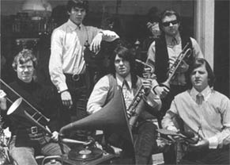
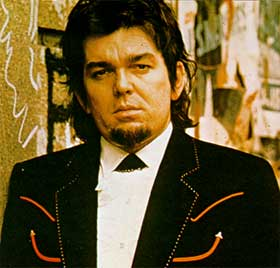
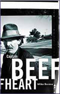
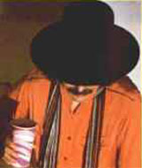

ЛИКБЕЗ
- это основные данные о Кэптэне Бифхарте
и его группе MAGIC BAND
а также:
"Неизвестный" Бифхарт (У НАС)
- несколько слов о феномене Бифхарта - что мы об этом знаем
Кроме того, в РОСтБИФе есть:
Строго персональные новости (НОВОЕ)
- свежая информация о музыке (и не только) Бифхарта
и изменениях на сайте
Раздел "первостатейный" (СТАТЬЯ1)
- "Человек в зеркале" (2001 г.);
есть предположение - не более того -
что это первая
достаточно объёмная статья на эту тему на русском языке
Творения маэстро (ДИСКИ)
- подробно расписанная дискография с краткими комментариями
Мизерная музыкальная антология (ЗВУКИ)
- небольшое количество собственно музыки;
содержание раздела медленно, но регулярно обновляется
"Волшебные" артисты (БЭНДЕРЫ)
- список музыкантов и авторов (соавторов) песен
Вопросы, уточнения, исправления, пожелания
и прочую ругань просьба отправлять
В_К.УЗНИЦУ

Группа образована в 1964-65 гг. в Ланкастере,Первоначальный состав:
Дон Ван Влит (Don Van Vliet) - вокал, губная гармоника
Алекс Снуффер (Alex Snouffer) - гитара (ударные)
Даг Мун (Doug Moon) - гитара
Джерри Хэндли (Jerry Handley) - бас-гитара
Пол Блэйкли (Paul Blakely) - ударные
"Запасные": гитарист Ричард Хепнер (Richard Hepner)
и барабанщик Вик Мортенсен (Vic Mortensen)
Строго говоря, MAGIC BAND ансамблем (т.е. коллективом) назвать нельзя - в его составе в разное время переиграло около тридцати музыкантов. Гораздо уместнее здесь ходовое сегодня слово "проект". Со стилем (направлением, жанром и т.п.) ещё труднее разобраться - вроде бы есть элементы и того и сего, но результат ни на то ни на другое не похож. Парадоксальным образом эта компания в любом составе делала очень самобытную музыку, постоянно меняясь и в то же время проводя некую свою и только свою линию. Вполне естественно объяснить это тем, что бессменым лидером "Мэджик Бэнда", его "руководящей и направляющей силой" все эти годы являлся
15.01.1941 (Глендэйл, Калифорния, США) - 17.12.2010 (Калифорния, США)

КЭПТЭН БИФХАРТ - настоящее имя Дон ВАН ВЛИТ (Don VAN VLIET) - вокалист и инструменталист (губная гармоника, саксофон, кларнет, волынка и пр.), автор музыки и текстов; живописец. Значимая фигура так называемой альтернативной музыки; среди приписываемых ему направлений - рок-авангард, блюз, фри-джаз, психоделия, протопанк. Имеет поклонников среди любителей как "альтернативы", так и "чистого" блюза.
<более подробную биографию Ван Влита-музыканта можно
найти здесь;
а список участников группы, авторов (соавторов), продюсеров - тут>
ОСНОВНАЯ ДИСКОГРАФИЯ:
<подробности дискографии - даты, песни, составы и мн. др. - ищите здесь>

КНИГАMike
Barnes. "Captain Beefheart". Quartet Books Limited, London,
2000.
Книга журналиста и музыканта Майка Барнса считается самой полной и объективной
биографией Бифхарта и его группы. В ней рассказывается также о детстве и юности
Ван Влита, о его "послемузыкальной" жизни. Много воспоминаний очевидцев, высказываний
самого Бифхарта. (В 2002 году вышла американская версия этой книги - "Captain
Beefheart: The Biography"; в 2004-м - переиздание в Великобритании)
В СЕТИ:
Это лишь небольшая часть "бифхартовских" веб-ресурсов. На этих страницах
есть ссылки на многочисленные другие сайты на эту тему; там можно найти немало
статей, редких записей, видео и т.д. и т.п.
Что касается информации на русском языке... Похоже, существует один единственный
сайт(ик), целиком посвящённый этому музыканту - и вы его уже нашли. Кроме того,
в недавно возродившемся "Журнале
нечеловеческой музыки "Результаты-online" есть статья "Человек
в зеркале" и "Дискография CAPTAIN BEEFHEART & MAGIC BAND"
- в первой редакции (2001 г.); на сайте "Рок-энциклопедия
- всё живое" в сентябре 2002-го также была размещена упомянутая
статья. Кое-где попадаются небольшие заметки с не очень точной информацией...
А ещё в ру-нете есть вот что:
"…и Кэптэн Бифхарт, сложенный, как слон,
опять грозит затмением времён."
Борис Гребенщиков

Нельзя сказать, что этот человек в России неизвестен вообще - как неверно было бы утверждать, будто он широко популярен на Западе. Там он пользовался этакой "полуизвестностью" на рубеже 60-х-70-х, больше в Европе или, скажем, в Японии и Австралии, нежели у себя на родине, в Штатах. У нас тоже его знали. Некоторые. Взгляните, например, на эпиграф - это написано ещё в 70-е годы. Иногда - уже позже - это имя иногда прорывалось в интервью Петра Мамонова (на него-то Бифхарт явно оказал немалое влияние). А уж наши рок-журналисты… К месту и не к месту - но только упоминания. То есть знали? Знали - и молчали? Знают - и молчат?! Вы будете смеяться - похоже, в русской рок-прессе и печати не было практически ни одной (об исключениях - чуть позже) мало-мальски достойной публикации на эту тему. И в русскоязычном интернете мало чего есть - в основном, опять же, только упоминания. Если кто-то может опровергнуть меня фактами - милости прошу, пишите, буду только рад… Странно всё это как-то. У нас давно (с хипповских времён) и устойчиво уважаем Фрэнк Заппа; Хендрикс - аналогично; незаметно, но бесповоротно стал почти народным любимцем Том Уэйтс (как ни крути, тоже в чём-то последователь Бифхарта); только ленивый не слышал о группе RESIDENTS; наши люди давно уже поняли, что блюз - это не только (да и не столько) LED ZEPPELIN или там Гэри Мур... И джаз самый разный просекаем, и авангарды всех мастей, и Мусоргских с Шостаковичами, и чёрта в ступе. А, опять же, Мамонов? "Пётр Николаевич, отец родной"?.. Бифхарт, пожалуй, чуть ближе к народу будет, чем тот же Заппа или Брайан Ино какой-нибудь. В хорошем смысле ближе. Потому что музыка его всё-таки не для головы и не от головы. А, как бы избито это ни звучало - от души. От большого такого Бычьего Сердца. И вот надо же - нет у нас практически никакого Бифхарта, и не было никогда…Ликвидатор безграмотности - некто К.Узник
Здесь - обещанные исключения. В первую очередь,
это вышедший в 1991(!) году в Новосибирске "Рок-справочник"
("Rock Guide"), который содержит достаточно точную дискографию
и некоторые данные по составу MAGIC BAND; что интересно, в графе "стиль"
у Бифхарта значится просто "blues" (а вот у Тома Уэйтса - "avant-garde,
blues"). Его составитель - Владимир Василевский, как консультант указан
Артём Троицкий. Этот справочник поражает и сейчас - в нём содержится информация
о 1300 различных группах и исполнителях (к примеру, я нашёл там неких (некоего)
DAN HICKS AND HIS/THE HOT LICKS, на чьём недавнем альбоме принимали участие
Уэйтс, Брайан Сетцер (экс-лидер STRAY CATS), Элвис Костелло и др.). А десятилетие
назад он вообще был чем-то уникальным - ведь никакими интернетами ещё даже и
не пахло. Поэтому бросать в него камни просто рука не поднимается. Конечно,
здесь есть ошибки (главным образом, по составу ансамбля), но для 1991 года это
всё равно очень сильно. Единственное, на мой взгляд, серьёзное упущение этого
справочника - практически полное отсутствие информации о блюзменах. То есть,
в нём есть и CANNED HEAT, и Алексис Корнер, есть и Чак Берри - но ни Мадди Уотерса,
ни Джона Ли Хукера, ни любого другого представителя блюза середины XX века (являющегося,
в общем-то, прямым "родителем" всей рок-музыки) вы здесь не найдёте...
Далее - наверное, это самое главное - выпущенные
русскими "лицензионщиками" и "нелицензионщиками" компакт-диски
Бифхарта. В основном, делалось это некой "АрсНовой" (ООО
"ArsNova"); на её счету:
"The Mirror Man Sessions" (1967,
в редакции 1999 года),
"Trout Mask Replica" (1969),
"The Spotlight Kid"/"Clear Spot"
(1972),
"Unconditionally Guaranteed" (1974),
"Bongo Fury" (Заппа/Бифхарт/MOTHERS)
(1975) и
"Shiny Beast (Bat Chain Puller)"
(1978). Кстати, обещали ещё...
Кроме того, это "неизвестно кто", выпустившие:
"Safe As Milk" (1967),
"Bluejeans & Moonbeams" (1974);
а также ООО "Компания ДОРА"
(существует ли она ещё?), издавшая сборник
"A Carrot Is As Close As A Rabbit Gets
To A Diamond" (1974-82).
Понятное дело, что все эти "лицензии"... Но! Вы можете регулярно покупать
диски за 15-20-30$ за штуку? Если да - поздравляю. Я - нет. И многие не могут.
А благодаря вышеуказанным товарищам можно было запастись немалым количеством
качественных записей Бифхарта. Возможно, кто-то просто из любопытства купил
- благо дёшево - и заинтересовался... Это не тот музыкант, на котором можно
заработать - по крайней мере, здесь и сейчас. Вот ещё одна бифхартовская фраза
(1970 г.): "Я не хочу продавать мою музыку. Было бы лучше отдавать её,
потому что там, где я её взял, за это не заплатишь".
Ну и ещё раз хочется особо отметить сайт "Антивоенная
коллекция Рок-н-Рола" (впечатляющая коллекция, доложу я вам). Информации
на русском языке там нет, но имеется большая часть альбомов Бифхарта
в mp3! За исключением, правда, "Mirror Man" (есть только кусочек заглавной
песни), "Lick My Decals...", "Shiny Beast..." и "Unconditionally
Guaranteed". Зато присутствуют: "original Bat Chain Puller"(!),
пара концертов MAGIC BAND (один из них - бутлег), "Bongo Fury", пара
сборников Заппы, где слышен Капитан, и видеоклип(!) "Ice Cream For Crow"...
А также - Project
3PM; чего стоят одни только слова: "Миссией всей деятельности Капитана
было создание своего музыкального мира с нуля, хотя он и использовал электрический
блюз в качестве субстрата [т.е. основы, отправной точки - К.У.]. Поэтому,
несмотря на элементы сходства музыки Капитана с традиционными жанрами, эту музыку
нужно воспринимать совершенно свежим ухом, как вы, например, первый раз в жизни
слушаете музыку какого-нибудь доселе неизвестного вам народа. Капитанская музыка
в отношении гармонии, ритмики, архитектоники и прочего музыкального blah-blah
часто гораздо дальше от "обычной" музыки, чем, например, индустриальные, амбиентные
или электронные эксперименты". (Что интересно, там также процитированы
слова Бифхарта (в оригинале, т.е. на английском), которые я привёл абзацем выше
- о продаже музыки).
Все остальные "исключения", как правило, в большей или меньшей степени связаны с разделом
1) "Влайет" ("Влиет").
Фамилия Vliet звучит на самом деле как "Влит", с долгим "и"
- [vli:t]; так же как "feet", "sheet" или - с теми же гласными
- "field" (никто же не говорит "ЧестерфИЕлд" или
"ЧестерфАЙЕлд"). Проверено.
2) "Дон Ван Влит - бас-гитара" ("... - гитара").
Бифхарту, насколько известно, случалось играть на бас-маримбе (запись "Safe
As Milk"), нередко - на бас-кларнете. Основными "его" инструментами
были губная гармоника, саксофоны и бас-кларнет; кроме того, он иногда поигрывал
на более экзотических духовых - волынке, шинае, симране - и на различного рода
перкуссиях. Но с бас-гитарой (тем более - с гитарой) Бифхарт замечен не был.
Эта ошибка встречается иногда и в импортной информации - например, в аннотациях
разных "интернет-магазинов".
3) "Заппаподобный Бифхарт".
Не согласен. Очень спорное суждение. Почему бы не сказать "бифхартоподобный
Заппа"? Вполне возможно, что Заппа повлиял на Ван Влита, но ведь не исключено,
что это был взаимный процесс. Конечно, что-то общее у них было, но по многим
творческим вопросам их можно назвать антиподами. Да, в MAGIC BAND в разное время
перешли из MOTHERS 6-7 музыкантов (заметьте, в обратную сторону переходов не
было). Но что (и как) они играли у Заппы, а что и как - у Бифхарта?.. В общем,
имеющий уши - да услышит.
Оговорюсь сразу, любая попытка издать у нас что-либо, связанное с Бифхартом, достойна всяческого уважения. Поэтому не нужно принимать сказанное ниже как издёвку. Это такая мягкая, добрая ирония...
1) Рок-энциклопедия "Ровесника"
Это одно из лучших наших изданий (а, может, и лучшее) о зарубежной рок-музыке,
не обходящее стороной и блюз и даже джаз; и чуть ли не единственное, вообще
поместившее статью о Бифхарте. Но... помимо "Влайета" и "бас-гитары"...
Состав, конечно же, указан на момент записи первого альбома (1967 г.), а не исходный (хотя перед этим написано "группа образована в 1964 году"). Довольно распространённое явление. "Алекс Сент-Клер Снаффи"? Либо уж Алекс Снуффер - он же Алекс Сент-Клер (т.е. Алекс Сент-Клер Снуффер), либо просто "Снаффи" ("Снуффи"? - "Snuffy") - это его недолговременное прозвище. (Все остальные участники, включая Ван Влита, названы только настоящими именами).
"Ван Влайет... в 1959 году поступил в
Калифорнийскую консерваторию, но вскоре бросил её".
Вот это новость! Да кто б его туда пустил? Дон поступил в художественную школу
(колледж?) в своём захудалом Ланкастере, причём, видимо, по линии скульптуры-живописи.
Но бросил он её действительно вскоре.
"Второй альбом - "Mirror Man",
1968, представлял собой, как и первый, искусственную смесь джаза, блюза и рок-н-ролла,
а аранжировки были крайне хаотичными".
Кто найдёт джаз на "Safe As Milk" и "Mirror Man" - тому
приз (пластинка рок-н-роллов Майлза Дэвиса). Насчёт "искусственной смеси"
(в принципе): блюз и джаз, блюз и рок-н-ролл - разве дальние родственники? Да
и есть такой "джаз-рок"... В любом случае, искусственная смесь - это
не про Бифхарта. Аранжировки на втором альбоме можно было бы с натяжкой назвать
"хаотичными". Правда, там нет аранжировок в полном смысле этого слова
- это блюзовые "джемы", т.е. импровизации, записанные вживую. Может,
авторы перепутали "Mirror Man" и "Trout Mask Replica"?
"Извлекая опыт из собственных ошибок,
Кэптен Бифхарт стал более осторожно экспериментировать со стилями".
Ага, как на "Trout Mask..." (1969) и "Lick My Decals Off, Baby"
(1970) - на "осторожных" таких, "традиционно звучащих" альбомах.
Сомневаюсь, что Ван Влит согласился бы со словом "ошибки".
"...в свободное время "Капитан Бычье
сердце" рисует и все свои пластинки оформляет собственноручно".
Что такое "оформляЕТ"? Последняя пластинка, записанная Бифхартом,
датирована 1982-м годом, а энциклопедия - 1997-м (в последнем переиздании 2003
года - то же самое)... Собственноручно он оформил лишь 4 альбома из 12-ти -
"The Spotlight Kid" (1972) - и то за исключением лицевой обложки,
и три последних. Кстати говоря, ещё неизвестно, что он делал "в свободное
время" - рисовал или музицировал. С какой стороны посмотреть...
Дискография вполне удовлетворительная, но нигде больше мне не удалось найти упоминаний о EP "Sampler" (1978). Также включена такая позиция, как "Blue Collar" (1978) - распространённая ошибка. Это саундтрек, на котором есть только одна песня в исполнении Бифхарта - "Hard Workin' Man" (и та не его). На этой записи звучат также Хаулин Вулф, Айк и Тина Тёрнер и пр.
2) Оформление CD "Trout Mask Replica", выпущенного "АрсНовой"
Не знаю, по каким правилам они "играют", возможно, все эти ляпы допущены
намеренно. Но - интересно. Не касаюсь опечаток - их здесь очень много, в том
числе и в названиях песен (опечатки и на "фирме" бывают). Длительность
вещей процентах в 70-ти случаев указана "от фонаря".
Надпись "Produced Frank Zappa".
Само по себе, это соответствует действительности (но пишется, по-моему, "Produced
by..."). Только на лицевой обложке "родного" диска ничего такого
не написано (тем более шрифтом, более заметным, чем названия группы и альбома).
Вероятно, это сделано для лучшей "продаваемости" (а "смели"
его довольно быстро).
Информация о составе музыкантов.
Это - главный прикол:
"...Mark Boston - Bass, Guitar
Drumbo - Drums
John French - Drums
Jerry Handley - Bass
Bill Harkleroad - Guitar
...Rockette Morton - Bass, Vocal, Narrator
Zoot Horn Rollo - Fluto, Guitar..."
Дело в следующем: Джон Френч и "Драмбо" - один и тот же человек. Точно
так же, как Марк Бостон и "Рокет Мортон", как Билл Хаклроуд и "Зут
Хорн Ролло". А басист Джерри Хэндли к тому времени в состав MAGIC BAND
уже не входил и в записи этого альбома не участвовал.
Год выхода альбома.
Указан 1979-й. На самом деле - 1969-й. Или ладно, будем держать за опечатку...
3) Рок-эциклопедия
"Hard Rock Cafe" на "народе.ру"
В принципе, очень неплохая для такого объёма заметка, но есть некоторые несоответствия:
"Herb Bermann - бас" (в окне
"Состав").
Это что-то. Херб Берманн упоминается на первом альбоме (и на "Shiny Beast..."
- в одной из песен) как соавтор текстов; есть подозрение, что его на самом деле
не существовало (что он - выдумка Бифхарта). Басистом тогда (до 1969 года) был
Джерри Хэндли. Вообще здесь почему-то указан состав на период записи "Mirror
Man" и "Strictly Personal" (второй и третий альбомы). Только
тогда уж надо "Alex St.Clair" (он же Alex Snouffer), а не "Alex
Clair", и "Antennae Jimmy Semens" (он же Jeff Cotton), а
не просто "Jimmy Semens" - поскольку это прозвища. Все эти
ошибки растут, судя по всему, как раз из новосибирского "Рок-справочника"
- но сейчас, простите, не 91-й год... Интересно, что в самом тексте начальный
состав указан верно.
"В 1975 году Бифхарт и Заппа записали
превосходный концертник "Bongo Fury". После этого Влайет вплотную занялся другим
своим увлечением - живописью. На гастроли "Beefheart" выезжал лишь по случаю,
и всецело предавался новому занятию... и в 1982 году выпустил "Ice Cream For
Crow"".
То есть такое впечатление, что между "Bongo Fury" и "Ice Cream..." ничего не
записывалось. А как же лучшие альбомы "позднего" Бифхарта "Shiny
Beast..." (1978) и "Doc At The Radar Station" (1980)?! Я уж не
говорю о невыпущенной оригинальной версии "Bat Chain Puller" (1976)...
(А в окне "Дискография" почти всё верно). Живопись не была для Ван
Влита "новым занятием" (музыкой он увлёкся позже, и живопись не бросал).
На гастроли "лишь по случаю"... хм-м... не совсем, пожалуй, точно.
В основном, его немногочисленные выпущенные концертные записи сделаны в 1978-81
гг.
4) Сайт
студии "Ta-musica"
Кстати, эта студия распространяет на кассетах, среди всего прочего, бифхартовские
"Safe As Milk" и "Mirror Man". Вот ещё бы и остальные альбомы
- их не так много, концертнички, что-нибудь из "бокс-сета"...
"VanVilet" ("ВанВилет").
Внимательнее надо читать. И писать. Вообще, состав здесь - один в один с тем,
что и на "Hard Rock Cafe", включая басиста Херба Берманна.
"И все ранние альбомы были выпущены Капитаном
на частной Запповской фирме STRAIGHT Records".
На Straight Records вышли только 2 альбома - "Trout Mask Replica"
(1969) и "Lick My Decals Off, Baby" (1970) - четвёртый и пятый соответственно.
Все последующие - на Warner Brothers (Reprise), Mercury и Virgin; первые же
3 пластинки были выпущены на фирмах Buddah Records и Blue Thumb - ни к одной
из них Заппа отношения не имел.
"В отличие от творчества Заппы, здесь
авангардные структуры только дополняют текстово-ориентированные темы... тем
самым был сформирован новый жанр "Text-based Avantgarde"".
То бишь, музыка - фигня, главное - тексты? Весьма спорно. Действительно, поэзия
Ван Влита очень своеобразна и интересна, но и музыка - не менее (особенно для
нас, русскоязычных). Упоминание о таком жанре (стиле?) лично я слышу (вижу)
впервые.
5)
"Hi-Fi Club - вокально-инструментальная газета (обзор CD новинок)"
(В настоящее время данной статьи там уже нет, т.е. возможно, это единственное
место, где сохранился сей перл).
Спасибо, конечно, что снизошли до Бифхарта (до рецензии на сборник "The
Dust Blows Forward", 1999). Очередное подтверждение того, что не следует
слишком доверять незнакомым "обозревателям". Часто уж их самоуверенные
заявления прикрывают весьма слабое знание предмета. Даже не знаю, с чего начать
- хоть целиком цитируй. Так и делаю. Орфография подлинника сохранена.
"Хотя легендарный вангардист блюза и буги с товарищем Раем Кудером отливал бесценные золотые чурки в студии A&M, наследием завладел Warner/Chappell, где и вышли центровые альбомы дискографии "Trout Mask Replica" и "Mirror Man"".
Что такое отливали Бифхарт с Кудером на A&M - загадка (ответ знает только некто
Владимир Елбаев). На этой фирме были сделаны лишь два ранних сингла MAGIC BAND
(ещё ДО первого альбома, единственно в записи которого и принимал участие "товарищ
Кудер")... Второй (по времени записи) альбом "Mirror Man" был
выпущен, как и первый, фирмой Buddah; "T.M.R." (1969) - запповской
Straight Records (при чём здесь Warner и какой-то Chappel?)... Обе пластинки
хороши, но почему именно (только) они - "центровые"?
"Все время до них Бифхарт высмеивал Джона
Ли Хукера (месть белого черному?), после них - занимался музыкальным пост-эксперессионизмом."
"До них"?.. До какого из них? Ну ладно, пусть товарищ не знает, что
"Mirror Man" был только выпущен в 1971 году, а записывался - в 1967-м;
т.е. до него были лишь "Safe As Milk" и пара синглов. Пусть. Но где
же всё-таки этот расист издевался над Хукером? Получается, что или на первом
альбоме, или (и) на "Strictly Personal" (1968). На "Strictly..."
есть песня "Beatle Bones 'N' Smokin' Stones" - она действительно звучит как
издевательство... только вот над кем? Надо сказать, что Бифхарт по молодости
неоднократно исполнял на концертах вещи и Хукера, и Хаулина Вулфа, и многих
других негров; первый его сингл - песня Бо Диддли и Вилли Диксона; он на музыке
чёрных стоял практически обеими ногами - ...высмеивал? На том же "Mirror
Man" как минимум в двух вещах (из четырёх всего) чувствуется несомненное
влияние Хаулина Вулфа... Месть какая-то... А если говорить о пост(?)-экспрессионизме,
так "Trout Mask Replica" - его первый (в т.ч. и по хронологии) представитель.
В общем, запутал всех обозреватель. Или сам запутался...
"К счастью, бешеный ревущий шизофренический
"Trout" здесь представлен почти целиком, но, к сожалению, "Mirror" выпущен фирмой
совершенно отдельным комлпектом и не отражен совсем."
Двойной (на LP) альбом "Trout Mask Replica" содержит 28 (двадцать восемь) композиций.
На рассматриваемый сборник из них вошли 7 (семь). Это насчёт "почти целиком".
Далее: "Mirror Man" выпущен "отдельным комплектом", как
и любой другой альбом Бифхарта, как вообще принято альбомы выпускать. Что здесь
хотел человек сказать - опять загадка. Но в данном сборнике "M.M."
не отражён - это чистая правда (есть предположение, что по причине большой длительности
песен: самая короткая - 8 минут). А о какой фирме речь? "Mirror Man"
(и его последнюю редакцию "The Mirror Man Sessions", 1999) выпустила
Buddah, сборник "The Dust Blows Forward" - Rhino...
"Атология имеет хард-блюзовый крен, его
книжеца по плотности информации не знает равных - и вообще, хорошо иметь под
рукой эксклюзивно выпаолненного Бифхарта. Оценка: 20$."
Это я уже так, чтобы ещё разок насладиться слогом. Может быть, орфография отражает
скорость работы над материалом, а скорость, в свою очередь - качество? Если
не знаешь чего-то - так сначала узнай, потом пиши; не хочешь узнавать - не пиши
совсем. Лично мне так кажется. Насчёт того, чтобы "иметь и т.д." -
не под рукой, а вообще иметь! - двумя руками (больше нету) - за. Что это за
"оценка" такая, я не совсем понял, но - неплохо: на amazon'ах разных
этот сборник ("двойник", кстати) стоит больше 20-ти фунтов (и далее
по курсу).
Пользуясь случаем, хочу поблагодарить: Валерия Климова и Михаила Шарова - за то, что слушают всё это безобразие; Юрия Кузнецова - за помощь в борьбе с информационными технологиями; Тео Тимана (Theo Tieman), Детлефа Юргенса (Detlef Jürgens), Грэхэма Джонстона (Graham Johnston) - за информацию в интернете, а также Бена Уотерса (Ben Waters) и многих других участников форума "Fire Party" - за помощь; Петра Кузнецова, Дмитрия Штилермана, Олега Гарипова, Владимира "Вишварупу", Василия Филитова, Гэри Лукаса (Gary Lucas) - за диски и вообще; Майка Барнса (Mike Barnes) и (опять же) Петра - за книгу; некоего Виталия из "АрсНовы" и прочих просветителей - за выпущенные в свет CD Бифхарта; питерские магазины "Rock Island" и "Караван" - за его же магнитные записи; Мика Саутгейта (Mick Southgate) и создателей "Антивоенной коллекции..." и "Музыки MP3" - за редкие mp3; Андрея Турусинова и Фёдора Романенко - за терпение; ну и, конечно, Дональда Глена Ван Влита - за всё, что он натворил
К.У.